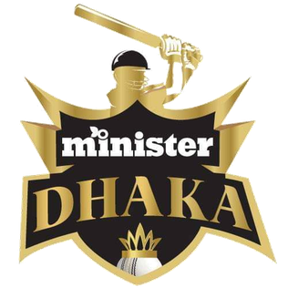
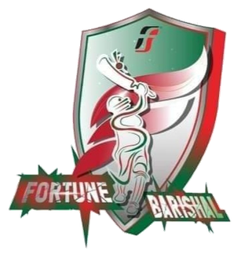
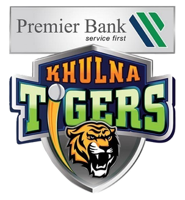
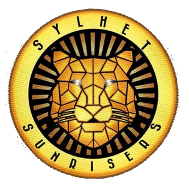

BPL 2022 team list





The 2021–22 Bangladesh Premier League, also known as BPL 8 or Bangabandhu BPL 2021–22 presented by BBS Cables and powered by Walton (for sponsorship reasons), will be the eighth season of the Bangladesh Premier League (BPL), the top-level professional Twenty20 cricket league in Bangladesh, organized by the Bangladesh Cricket Board (BCB).
Visit to know more
The Bangladesh Premier League is all set to get underway from January 21, after the previous edition was scrapped due to the Covid-19 pandemic — here’s the full squad and team list of BPL 2022.
The 2022 edition of the BPL gets underway on January 21, with Chattogram Challengers taking on Fortune Barishal. Six teams will take part in the competition, playing 34 T20s in the tournament. The final will be held at the Shere Bangla Stadium in Dhaka on February 18.